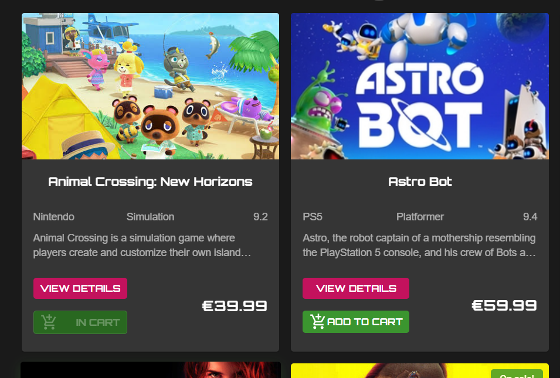

Game Shop
SPA-приложение для магазина видеоигр
Презентация Алины Черкасовой
Дата презентации: 20.06.2025
Наша команда «Any»:
План презентации
-
Вклад команды и командная работа
Как совместная работа привела к успеху. -
Динамика и координация
Инструменты и процессы для слаженной работы. -
Техническая реализация и GitHub
Как мы управляли кодом и проектом.
Сила синергии
Cоздаем современные приложения вместе«Талант выигрывает игры, а команда — чемпионаты»
Майкл Джордан
Качество через командную работу
«Каждый отвечает за свою часть, все отвечают за результат»
Нашей целью было не просто выполнить ТЗ, а реализовать каждую функцию на высшем уровне: с чистым кодом, хорошим UX и без багов.
Наш подход — четкое разделение задач. Каждая из нас брала на себя ответственность за определенный блок функционала. Это позволило работать параллельно и эффективно.
Ключом к успеху стали единые стандарты качества кода (ESLint, Prettier) и общие правила работы с Git, которые мы установили в самом начале.
Пример: Интеграция модуля «Карточка игры» и «Корзина»
Модуль «Карточка»
Разрабатывала: Ксения
Модуль «Корзина»
Разрабатывала: Анастасия
Результат: Несмотря на раздельную разработку, модули интегрировались и отлично взаимодействуют между собой. Это стало возможным благодаря заранее согласованной структуре данных и единому API-клиенту, который мы настроили для работы заранее.
Наша система координации: элементы SCRUM
Для организации работы мы использовали элементы гибкой методологии SCRUM.
- Работа была разбита на двухнедельные спринты.
- В начале каждого спринта мы вместе обсуждали и выбирали задачи из бэклога.
- Каждая участница брала задачи, которые хотела и могла выполнить, исходя из своих сильных сторон и желания.
- Спринт заканчивался командным ревью кода и готовым продуктом.
Инструменты для координации
Kanban-доска на GitHub
Наш центр управления задачами
Колонки "To Do", "In Progress", "In Review" и "Done" давали полную прозрачность на каждом этапе.
Коммуникация
Как мы оставались на связи
-
Telegram:
Основной чат для быстрых вопросов и обмена статусами. -
Еженедельные созвоны:
Для планирования спринта и подведения итогов. -
GitHub:
Обсуждения в Pull-реквестах вопросов по коду.
Техническая реализация и стандарты
Технологический стек
Стандарты качества кода
Эти инструменты обеспечили стабильность и чистоту кодовой базы на протяжении всего проекта.
Архитектура проекта
Feature-Sliced Design
- Масштабируемость: Легко добавлять новые фичи.
- Автономность: Позволило нам работать над разными фичами, не затрагивая код друг друга.
- Порядок в коде: Четкие правила расположения файлов и модулей.

GitHub: центр управления кодом
Feature-Branch Workflow
Мы использовали стратегию Feature-Branch:
- Новая задача = новая ветка.
- Разработка ведется изолированно.
- Готовая фича вливается в ветку спринта через Pull Request.
Это позволило нам работать параллельно, не ломая код друг друга.
Активность команды
Примечание: Количество коммитов отражает индивидуальный стиль работы.
Более объективную картину вклада дает список Pull-реквестов, где каждая из нас
является
автором своих фич.
Code Review: механизм контроля качества
Ничего не попадало в основную ветку без проверки всех членов команды.
В этом PR для реализации страницы 404 мы обсуждали местоположение ассетов, согласно архитектуре FSD.
Автоматизация: CI/CD с GitHub Actions
Наш воркфлоу для автоматической проверки и деплоя.
Настроили процесс непрерывной интеграции и доставки (CI/CD) с помощью GitHub Actions.
- Pull Request в ветку `develop` автоматически запускает рабочий процесс.
- Preview: скрипт проверяет линтерами проект и запускает тесты.
- Deploy: приложение собирается и автоматически публикуется на GitHub Pages.
Результат: Любое обновление в основной ветке мгновенно и без ошибок попадает в демо-версию нашего приложения.
README
Хорошая документация — это часть качественного проекта.
README содержит всё необходимое для быстрого запуска и тестирования проекта локально.
Выводы и чему мы научились
Проект "Game Shop" стал для школой командной работы.
- Сила в правилах: Четкие договоренности позволяют работать автономно, но двигаться к общей цели.
- Доверие важнее микроменеджмента: Мы научились доверять профессионализму друг друга, зная, что каждый ответственно выполнит свою часть работы.
- Инструменты решают: Правильно настроенные Kanban, GitHub Actions и линтеры экономят время и предотвращают конфликты.
Итог: Мы вместе создали качественный продукт.
Спасибо за внимание!
Готовы ответить на ваши вопросы